Here I will leave a few of my notes/illustrations about CSS
CSS = Cascading Style Sheets. Cascading betyr at den alltid tar selektoren som er sist først, der den jobber seg nedover kaskaden og velger den siste inputen den møter på for en spesifikk selector.
CSS propterties, link her
Unsplash er bra for gratis bilder til nettside
Farger - Paletton er bra for farger som passer bra sammen:
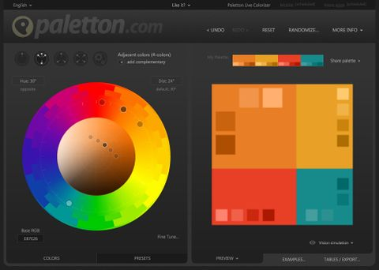Vi har 3 måter å definere farger på i CSS - navn, hex og rgba:
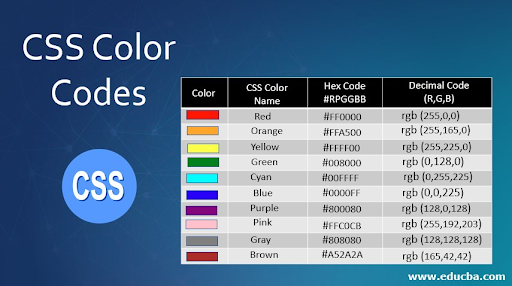CSS Selectorer - velger HTML elementet(ene) du ønsker å style i CSS. Les mer om det på w3schools eller CSS almanac:
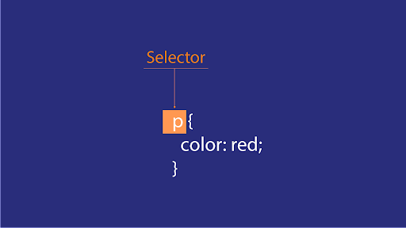Her er et kult spill for å forstå selektorer
Parent og Child-elemeter:
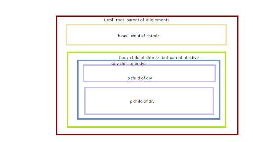Cascade - fra topp til bunn
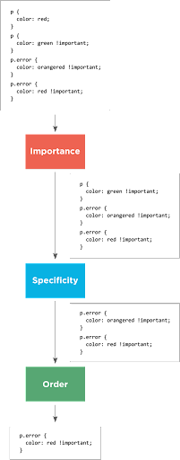Specificity
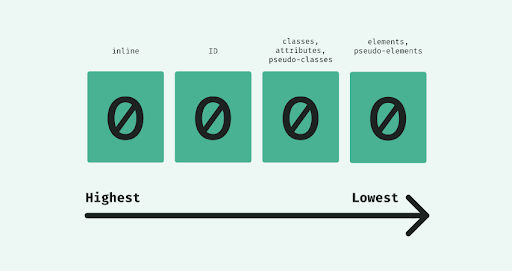Inheritance
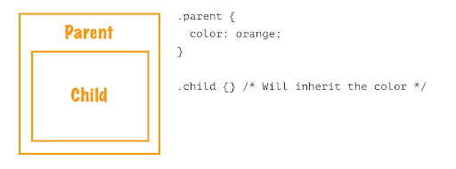Fonter - Google Fonts er en god ressurs
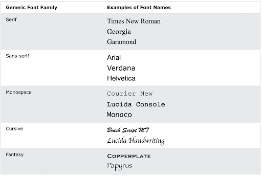Float Clear
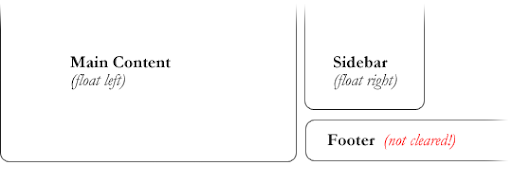Box Model
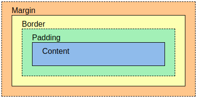PX, EM, REM, %, VW, og VH
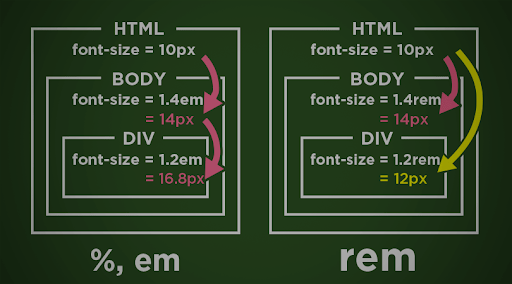Quiz finner du her, øvelse finenr du her, ressurser og verktøy finner du her.
Critical render path = er sekvensen av steg nettleseren gjennomgår for å konvertere HTML, CSS, og JavaScript til piksler på skjermen.
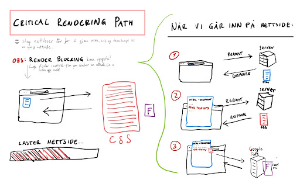Minifisering av kode
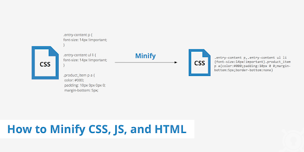Fleksboks- ressurser: CSS Tricks, spill, Cheatsheet.
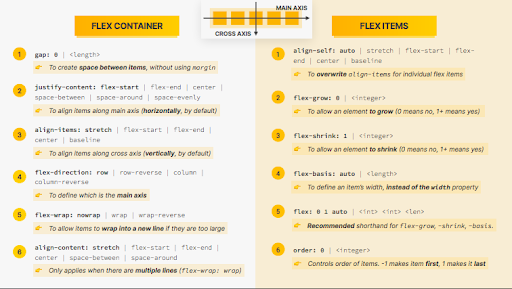transition og transform
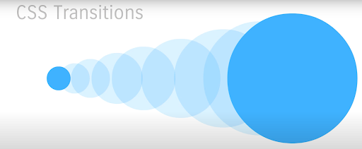Animations
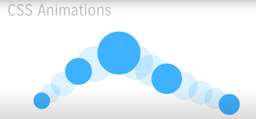nettleser prefixes - ressurser: Can I Use, Should I prefix, Autoprefixer:
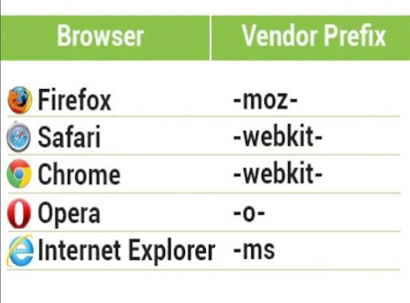Go back to Main page for more projects